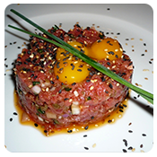
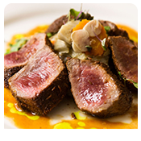
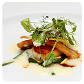
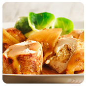
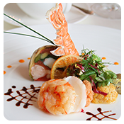
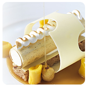
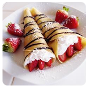

Appetizers
-

L'Escargot | Black Truffle Butter, White Wine, Shallots, Gruyere, Garlic 15
-
Soupe à l'Oignon | Classic French Onion Soup 8
-
Foie Gras 3 Ways | Pan Seared, Duck Liver Mousse, Torchon & Assorted Condiments 17
-
Légumes | Seasonal Vegetable Platter 14
Entrees
-

Steak Tartare Classique, Dish of the day | Served Raw with all the Classic Condiments 15
-

Entrecôte | Ribeye, Seasonal Mushrooms, Mashed Sweet Pommes,Brussels & Blue Cheese Butter 31
-
Vivaneau Local | Seared Snapper, Roasted Parsnips, Hazelnut Praline & Green Lentils 28
-

Moules Frites | Seared scallops in White Wine, Onions, Garlic, Aioli & Handcut Pommes Frites 20
-

Poitrine de Poulet | Seared Chicken Breast, Heirloom Tomato Goat Cheese Farro & crispy Kale 24
-

Seared Shrimp with Piment d'Espelette and Orange | Shrimp, orange, alongisde a fennel salad 22
Desserts
-

Banana Foster dressed in dark brown sugar, butter, rum and cinnamon, served over ice cream 8
-

crêpe strawberry | Dessert Crepes With Strawberry Cream Filling dressed with milk chocolate 10